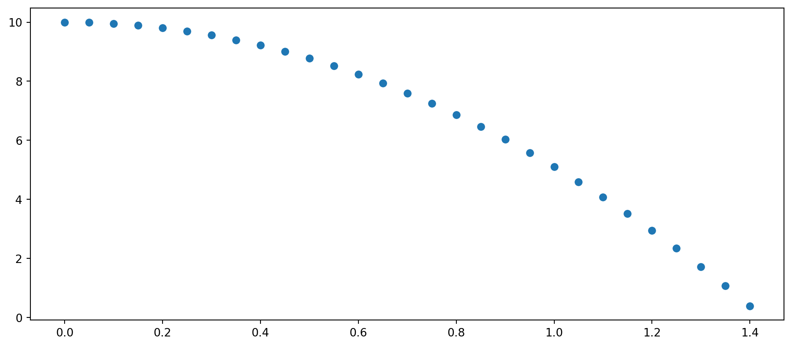
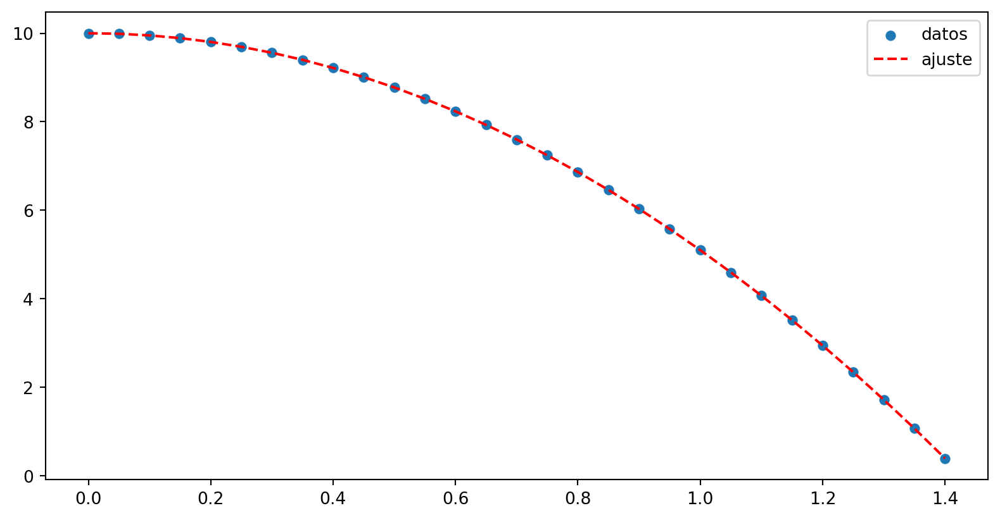
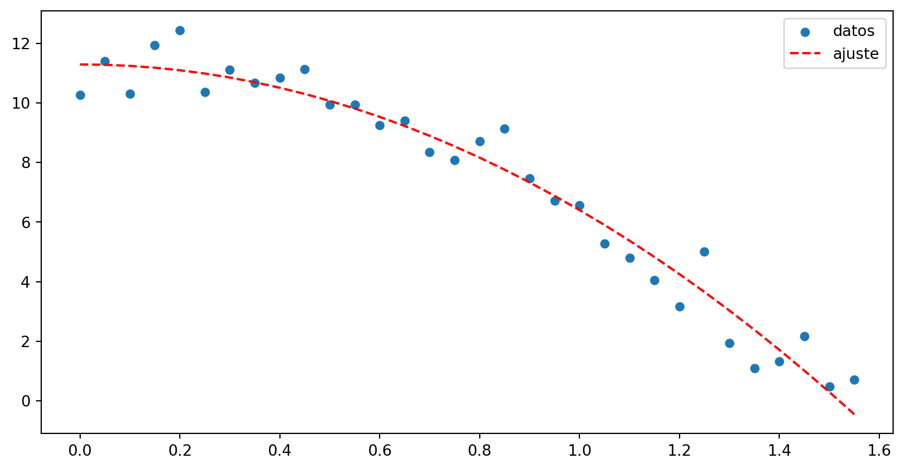
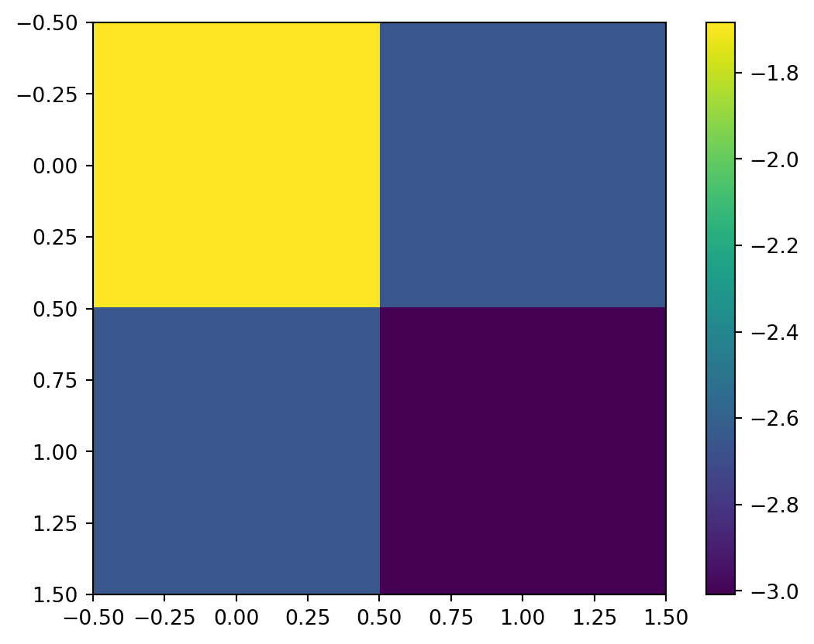

import numpy as np
import matplotlib.pyplot as plt
t = np.arange(0,10,0.05)
y = -4.9*t**2+10
y0 = y[y > 0]
fig, ax = plt.subplots()
fig.set_size_inches(12,5)
ax = ax.scatter(t[:len(y0)],y0)
Scipy y Pandas - Ajuste de datos
El módulo Scipy es una colección de herramientas para el cálculo científico de amplio espectro. veremos algunas de sus posibilidades
Introducción a Pandas
Nos centraremos en unas pocas funciones de su vasto arsenal: aquellas que nos permiten obtener la expresión analítica que más se ajusta a un conjunto de datos discretos.
Es de suma importancia a la hora de ajustar los datos de una curva, tener una idea del modelo físico al cual queremos ajustar nuestros datos. Es decir, la hipótesis teórica que el experimento debe validar es un a-priori que la experimentación validará (o no) y somos nosotros los experimentadores quienes debemos proveer el modelo al cual ajustar.
En términos matemáticos lo que optimize hace es es minimizar una función del tipo:
\[\sum_i (f(x_i,\beta) - y_i)^2\]
en donde \(\beta\) son los parámetros que podemos variar, y \(x_i\) y \(y_i\) conforman los pares de valores obtenidos experimentalmente (suponemos el caso de una variable de entrada y una de salida por simplicidad en la notación)
El modulo a usar es optimize de la libreria scipy por lo que para importarlo haremos
from scipy import optmize as opo alternativamente:
import scipy.optimize as spVamos a crear unos datos a partir del modelo teórico de una caída libre sin rozamiento. Debajo vemos como se filtra un array y para obtener los valores de altura mayores a cero y luego “rebanamos” el array t para que tenga la misma cantidad de elementos que el array de alturas, y luego hacemos un gráfico de dispersión (scatter) como si los datos hubieran sido obtenidos desde un experimento. Está claro que estos datos van a ajustar “perfecto” al modelo teórico ya que lso datos fueron creados a paritr de éste.
import numpy as np
import matplotlib.pyplot as plt
t = np.arange(0,10,0.05)
y = -4.9*t**2+10
y0 = y[y > 0]
fig, ax = plt.subplots()
fig.set_size_inches(12,5)
ax = ax.scatter(t[:len(y0)],y0)
Para ver más sobre como filtrar o rebanar un array pueden consultar acá o acá
con nuestras habilidades de pandas, construyamos un archivo ficticio en base a estos datos, para luego “leerlo” y a partir de ahí usar el ajuste de curvas. Este paso no es necsario, ya que podemos usar los datos ya disponibles en los arrays, pero no viene mal la práctica
import pandas as pd
df0 = pd.DataFrame([t[:len(y0)],y0])
# este array tiene dos filas y N columnas por lo que el dataframe no nos sirve
df = pd.DataFrame(np.array([t[:len(y0)],y0]).T, columns=['t','y'])
# si transponemos los datos queda en la forma correta y podemos agregar los nombres
# de los ejes
df.head() # para mirar los primeros datos
df.tail() # para mirar los ultimos datos
df.to_csv('../assets/ej_op_0.csv',index=False)
# la ruta para que funcione debe ser la que se haya montado en tu sesión de colab
# index=False hace que no exportemos la columna de los índices que genera pandas# otra opción para crear el dataframe es
# pasar como índices los nombres de las columnas y
# transponer el dataframe una vez creado
arr = np.array([t[:len(y0)],y0])
dfa = pd.DataFrame(arr,index=['t','y']).T
dfa.head()| t | y | |
|---|---|---|
| 0 | 0.00 | 10.00000 |
| 1 | 0.05 | 9.98775 |
| 2 | 0.10 | 9.95100 |
| 3 | 0.15 | 9.88975 |
| 4 | 0.20 | 9.80400 |
datos = pd.read_csv('../assets/ej_op.csv')Tenemos que crear una función que contega la información del modelo. Como primer parámetro debe contener la variable dependiente y luego los parámetros
def opti(x,a,b):
"""
x: variable independiente
a: parámetro de la aceleración
b: parámetro de la altura inicial
"""
return -0.5*a*x**2+bfrom scipy import optimize as op
param_a, cov = op.curve_fit(opti,datos['t'],datos['y'])
print('aceleracion' , param_a[0],'m/s/s','\n','altura inicial',param_a[1],'m')aceleracion 9.8 m/s/s
altura inicial 10.0 mPodemos hacer un gráfico de los “datos” contra la curva con los parámetros obtenidos del ajuste
fig,ax = plt.subplots()
fig.set_size_inches(10,5)
ax.scatter(datos['t'],datos['y'],label='datos',lw=0.1)
ax.plot(datos['t'],opti(datos['t'],param_a[0],param_a[1]),'--',label='ajuste',color='red')
ax.legend(loc='upper right')
Si quiséramos tener un caso que se vea mas “real” podemos hacer que los datos generados tengan un poco de “ruido”
t = np.arange(0,10,0.05)
# agregamos un número aleatorio entre -1 y 1
ruido = np.random.rand(len(t))*3
y = -4.9*t**2+10 +ruido
y0 = y[y > 0]
#fig, ax = plt.subplots()
#fig.set_size_inches(12,5)
#ax = ax.scatter(t[:len(y0)],y0)
param_a, cov = op.curve_fit(opti,t[:len(y0)],y0)
fig,ax = plt.subplots()
fig.set_size_inches(10,5)
ax.scatter(t[:len(y0)],y0,label='datos',lw=0.1)
ax.plot(t[:len(y0)],opti(t[:len(y0)],param_a[0],param_a[1]),'--',label='ajuste',color='red')
ax.legend(loc='upper right')
print('aceleracion' , param_a[0],'m/s/s','\n','altura inicial',param_a[1],'m')aceleracion 9.99981100345115 m/s/s
altura inicial 11.423540775734502 m
Si hacemos una gráfica de colores con la matriz de covarianza obtenemos una idea del “error” de cada parámetro. La interpretación de esta matriz escapa a lo que podemos ver en esta materia. La idea es que es una matriz cuadrada que relaciona todos los parámetros a los que ajustamos entre si. La diagonal es una medida del error de un parámetro específico las otras celdas son entre un parámetro y otro: es decir, la diagonal nos da una idea del error en un parámetro mientras que el resto nos indica como se influyen entre si los parámetros.
print(np.diag(cov))
print(cov)[0.1856886 0.04936096]
[[0.1856886 0.07079378]
[0.07079378 0.04936096]]en nuestro caso los errores son muy pequeños porque los datos son generados a partir de un modelo teórico.
plt.imshow(np.log(np.abs(cov)))
plt.colorbar()
Se puede usar constants? para ver la ayuda el listado de constantes disponibles
from scipy import constants
print(constants.Boltzmann)
g = constants.g
print(g)
constants.unit('electron mass') # ver las unidades
print(constants.yotta) # acceder a prefijos
k = constants.kilo
print(10*k)
constants.gram # Kg / g
print(constants.kilogram_force) # Newtons / Kgf
print(constants.kgf)1.380649e-23
9.80665
1e+24
10000.0
9.80665
9.80665